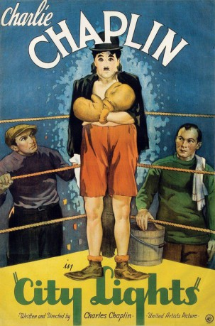

#7176 Lichter der Großstadt
Alternativ: City Lights
 
 IMDB-Wertung: 8.6 / 10
IMDB-Wertung: 8.6 / 10  IMDB-TOP-Platzierung: 35
IMDB-TOP-Platzierung: 35  Metascore: 0
Metascore: 0 
A tramp falls in love with a beautiful blind girl. Her family is in financial trouble. The tramp's on-and-off friendship with a wealthy man allows him to be the girl's benefactor and suitor.
Jahr: 1931
Dauer: 87 Minuten
FSK: 6
Land: USA Studio: United ArtistsTonspuren:
Untertitel: Deutsch,
Auflösung: 1080p (1440x1080) Größe: 6993 MB
Genre: Drama, Komödie, Liebe
Regisseur:  Charles Chaplin
Charles Chaplin
Drehbuch: Charles Chaplin
Soundtrack:
Darsteller:
- Virginia Cherrill als A Blind Girl
- Harry Myers als An Eccentric Millionaire
- Al Ernest Garcia als James - the Millionaire's Butler
 Hank Mann als A Prizefighter
Hank Mann als A Prizefighter Charles Chaplin als A Tramp
Charles Chaplin als A Tramp- Buster Brodie als Bald Party Guest , uncredited
- Jean Harlow als Diner in Restaurant Scene , uncredited
- Florence Lee als The Blind Girl's Grandmother
- Jack Alexander als Spectator in Boxing Scene , uncredited
- T.S. Alexander als Doctor , uncredited
- Victor Alexander als Superstitious Boxer , uncredited
- Albert Austin als Street Sweeper / Burglar , uncredited
- Harry Ayers als Cop , uncredited
- Eddie Baker als Boxing Fight Referee , uncredited
- Henry Bergman als Mayor / Blind Girl's Downstairs Neighbor , uncredited
- Betty Blair als Woman at Center of Table in Restaurant , uncredited
- Jeanne Carpenter als Diner in Restaurant Scene , uncredited
- Marie Cooper als Dancer , uncredited
- Tom Dempsey als Boxer , uncredited
- Peter Diego als Man in Mix-Up with Coat and Hat , uncredited
- James Donnelly als Street Sweepers' Foreman , uncredited
- Ray Erlenborn als Newsboy , uncredited
- Ruth Garcia als Woman at Left of Table in Restaurant , uncredited
- Milton Gowman als Passerby in Street Scene , uncredited
- Robert Graves als Police Officer , uncredited
- Charles Hammond als Passerby in Street Scene , uncredited
- Ad Herman als Spectator in Boxing Scene , uncredited
- Joseph Herrick als Spectator in Boxing Scene , uncredited
- Austen Jewell als Newsboy , uncredited
- Willie Keeler als Boxer , uncredited
- A.B. Lane als Spectator in Boxing Scene , uncredited
- Eddie McAuliffe als Eddie Mason - Boxer , uncredited
- Leila McIntyre als Flower Shop Assistant , uncredited
- Margaret Oliver als Passerby in Street Scene , uncredited
- Robert Parrish als Newsboy , uncredited
- Mrs. Pope als Diner in Restaurant Scene , uncredited
- John Rand als Tramp Who Dives for Cigar , uncredited
- Granville Redmond als Sculptor , uncredited
- W.C. Robinson als Man Who Throws Away Cigar , uncredited
- James Sheldon als Young Man , uncredited
- Cy Slocum als Spectator in Boxing Scene , uncredited
- Tony Stabenau als Victorious Boxer - Later Knocked Out , uncredited
- Mark Strong als Man in Restaurant , uncredited
- Jack Sutherland als Tall Man at Party , uncredited
- Joe Van Meter als Burglar , uncredited
- Emmett Wagner als Second , uncredited
- Tiny Ward als Man in Elevator in Front of the Art Shop , uncredited
- Stanhope Wheatcroft als Distinguished Gentleman in Cafe , uncredited
Datei: X:\1900-1949\Lichter der Großstadt (1931, FSK6, 1440x1080).mkv seit 02.10.2017
Festplatte: HD 1900-1970
 Es gibt insgesamt 80 Filme in der Gruppe '1900-1949'
Es gibt insgesamt 80 Filme in der Gruppe '1900-1949'